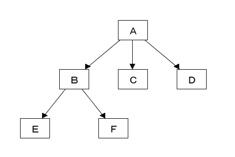
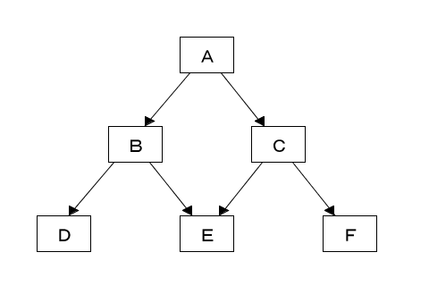
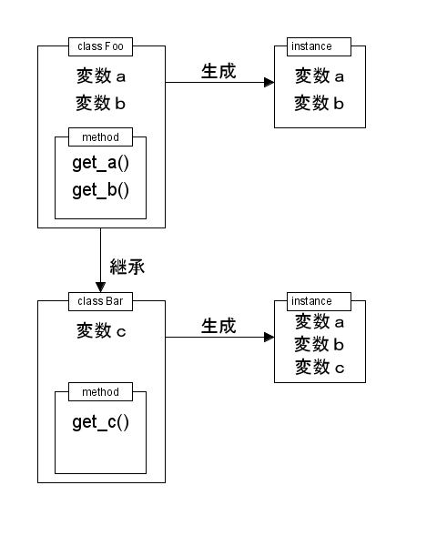

前回は簡単な例題として連結リストという基本的なデータ構造を作成しました。今回はオブジェクト指向機能の目玉ともいえる「継承」について説明します。Ruby の継承は他のオブジェクト指向言語と比べると、基本的な考え方は同じですが、Ruby らしくシンプルで柔軟なものになっています。最初に、一般的なオブジェクト指向言語で使われている継承について簡単に説明します。
継承 (inheritance : インヘリタンス) は簡単に言うとクラスに「親子関係」を持たせる機能です。子供のクラスは親クラスの性質を受け継ぐことができます。プログラミング言語の場合、引き継ぐ性質は定義されたインスタンス変数やメソッドになります。
プログラムを作る場合、今まで作ったプログラムと同じような機能が必要になることがありますが、継承を使うことでその機能を受け継ぎ、新規の機能や変更される機能だけプログラムする、いわゆる「差分プログラミング」が可能になります。
クラスを継承する場合、その元になるクラスを「スーパークラス」とか「ベースクラス」と呼びます。そして、継承したクラスを「サブクラス」と呼びます。この呼び方は言語によってまちまちで統一されていません。Ｃ++の場合は、元になるクラスを基本クラスといい、継承するクラスを派生クラスとか導出クラスといいます。
たとえば、クラス Foo1 を継承してクラス Foo2 を定義しましょう。クラス Foo1 にはメソッド bar() が定義されています。クラス Foo2 にメソッド bar() は定義されていませんが、Foo2 のオブジェクトに対して bar() を呼び出すと、スーパークラス Foo1 のメソッド bar() が実行されるのです。
メソッドの選択は次のように行われます。まず、オブジェクトが属するクラス Foo2 にメソッド bar() が定義されているか調べます。ところが、Foo2 には bar() が定義されていないので、スーパークラスである Foo1 に bar() が定義されているか調べます。ここでメソッド bar() が見つかり、それを実行するのです。このように、メソッドが見つかるまで順番にスーパークラスを調べていきますが、最上位のスーパークラスまで調べてもメソッドが見つからない場合はエラーになります。
継承したクラスのメソッドとは違う働きをさせたい場合、同名のメソッドを定義することで、そのクラスのメソッドを設定することができます。これを「オーバーライド (over ride)」といいます。メソッドを選択する仕組みから見た場合、オーバーライドは必然の動作です。メソッドはサブクラスからスーパークラスに向かって探索されるので、スーパークラスのメソッドよリサブクラスのメソッドが先に選択されるわけです。
継承には「単一継承」と「多重継承」の 2 種類があります。単一継承は、ただ一つのクラスからしか機能を継承することができません。したがって、クラスの階層は図 1 のような木構造 [*1] で表すことができます。

図 1 : 単一継承におけるクラスの階層
継承は何段階に渡って行われてもかまいません。たとえばクラス E の場合、スーパークラスが B で、B のスーパークラスが A に設定されています。サブクラスは複数あってもかまいません。たとえば、A のサブクラスは B, C, D の 3 つがあり、B のサブクラスは E, F の 2 つがあります。図 1 では、クラス A のスーパークラスはありませんが、ほかのクラスはただ一つのスーパークラスを持っています。プログラミング言語では Smalltalk や Java が単一継承です。
これに対し、多重継承は複数のクラスを継承することができます。このため、クラスの階層は木構造ではなく、図 2 のようなグラフ [*2] で表すことができます。

図 2 : 多重継承におけるクラスの階層
クラス E に注目してください。スーパークラスには B と C の 2 つがあります。多重継承では、単一継承と同じくサブクラスを複数持つことができ、なおかつ、スーパークラスも複数持つことができるのです。Ｃ++や Common Lisp Object System (CLOS) は多重継承をサポートしています。スクリプト言語では Perl や Python が多重継承です。
実をいうと、筆者は多重継承に対してあまりいいイメージを持っていません。私見ですが、多重継承はメリットよりもプログラムを複雑にするデメリットの方が大きいのではないか、と思っています。とくに、図 2 のクラス A, B, C, E のような菱形の関係をＣ++でプログラムする場合、とても複雑な問題を引き起こすことが知られています。
Ruby の場合、基本的には単一継承ですが、Mix-in という機能により限定的ですが多重継承も行えるようになっています。Ruby は Mix-in を導入することで、単一継承のシンプルさを保ちつつ多重継承の良いところを取り込んでいるように思います。多重継承と Mix-in については次回で詳しく説明します。
まずは最初に、一般的な継承の仕組みについて説明します。
一般的なオブジェクト指向言語の場合、継承によって引き継がれる性質は定義されたインスタンス変数やメソッドになります。図 3 を見てください。
 図 3 : 一般的なオブジェクト指向言語における継承
クラス Foo にはインスタンス変数 a, b とその値を取得するメソッド get_a(), get_b() が定義されています。次に、クラス Bar を定義します。Bar は Foo を継承し、Bar 固有のインスタンス変数 c と値を取得するメソッド get_c() を定義します。Foo と Bar のインスタンスを生成すると、図 3 に示したように、Bar のインスタンスにはクラス Foo で定義された変数 a, b も含まれます。このように、Foo のインスタンス変数が Bar に継承されます。
Foo のインスタンスを生成すると、もちろん変数 a, b は含まれていますが、Bar のインスタンスとメモリを共有することはありません。クラスはオブジェクトの設計図です。設計に共通な部分があったとしても、それから生み出されるインスタンスは別々の実体で、インスタンス変数を共有することはないのです。
クラス Bar にはメソッド get_c() しか定義されていませんが、クラス Foo を継承することにより、メソッド get_a() と get_b() を呼び出すことができます。Bar のインスタンスに対して get_a() を呼び出すと、クラス Bar には get_a() が定義されていないのでスーパークラス Foo を調べ、そこで定義されている get_a() が呼び出されます。もちろん、取り出される値は Bar のインスタンスにある変数 a の値です。このように、Foo のメソッドが Bar に継承されます。
一般のオブジェクト指向言語では、このようにインスタンス変数とメソッドの両方が継承されます。ところが Ruby の場合、インスタンス変数の継承は行われません。継承されるのはメソッドだけです。これは Perl や Python の継承と同じです。ただし、Ruby ではインスタンスを初期化するメソッド initialize() を継承することにより、インスタンス変数を継承することが可能になっています。
それでは、具体的に Ruby の継承を説明しましょう。スーパークラスは class 文で指定します。クラス名の後ろに < を付けて、その後ろにスーバークラス名を指定します。Ruby は単一継承が基本なので、指定できるスーパークラスは一つだけです。継承に必要な設定はこれだけです。
簡単な例として、図 3 のクラスを実際にプログラムしてみましょう。まずクラス Foo を定義します (リスト 1)。
リスト 1 : クラス Foo の定義
class Foo
def initialize(x, y)
@a = x
@b = y
end
def get_a
@a
end
def get_b
@b
end
end
メソッド initialize() でインスタンス変数 @a, @b を初期化します。メソッド get_a() と get_b() の定義は簡単です。与えられたインスタンスから値を取り出すだけです。次にクラス Bar を定義します (リスト 2)。
リスト 2 : クラス Bar の定義
class Bar < Foo
def initialize(x, y, z)
super(x, y)
@c = z
end
def get_c
@c
end
end
クラス名 Bar の後ろにスーパークラス Foo を指定します。Ruby はインスタンス変数を継承しないので、メソッド initialize() でスーパークラスのインスタンス変数 @a と @b を初期化する必要があります。@a と @b の初期化は Foo の initialize() で行っていますね。このメソッドを呼び出すことができれば、わざわざ Bar の initialize() で @a と @b の初期化を行う必要はありません。いいかえれば、スーパークラスのメソッドと同じプログラムを書かなくてもよいわけです。
Ruby の場合、super を使ってスーパークラスのメソッドを呼び出すことができます。単に super と呼び出すと、現在のメソッドの引数をそのままスーパークラスのメソッドに渡します。また、super(x, y) のように明示的に引数を渡してもかまいません。なお、引数無しでスーパークラスのメソッドを呼び出したい場合は super() とします。
このような処理を「メソッド結合 (method combination)」といいます。この例は簡単すぎるので、あまりメリットを感じないかもしれません。ところが、スーパークラスのメソッドが複雑な処理を行っていて、サブクラスのメソッドでも同様の処理が必要な場合には、その力を十分に発揮してくれるでしょう。
それでは実行してみましょう。
irb> a = Foo.new 1, 2 => #<Foo; ... @a=1, @b=2> irb> b = Bar.new 10, 20, 30 => #<Bar: ... @a=10, @b=20. @c=30> irb> a.get_a => 1 irb> b.get_a => 10 irb> b.get_c => 30 irb> a.get_c => エラー
Foo のインスタンスを変数 a に、Bar のインスタンスを変数 b にセットします。b.get_a() の場合、メソッド get_a() は Bar に定義されていませんが、スーパークラス Foo のメソッド get_a() が呼び出されて、インスタンス変数 @a の値を求めることができます。また、b.get_c() と呼び出せば、インスタンス変数 @c の値を求めることができます。ただし、a.get_c は Foo にメソッド get_c() が定義されていないのでエラーになります。
もしも、サブクラスで独自のインスタンス変数を使わない場合は、initialize() をオーバーライドする必要はありません。そうすると、スーパークラスの initialize() が自動的に呼び出されます。簡単な例を示します。
irb> class Bar1 < Foo irb> def get_c irb> @a + @b irb> end irb> end => :get_c irb> c = Bar1.new 10, 20 => #<Bar1: ... @a=10, @b=20> irb> c.get_a => 10 irb> c.get_b => 20 irb> c.get_c => 30
クラス Bar1 は initialize() をオーバーライドしていません。Bar1 のインスタンスを生成すると、Foo の initialize() が呼び出されて、インスタンス変数 @a と @b が初期化されます。そして、メソッド get_c() を呼び出すと @a と @b を足した値を返します。
クラス変数とクラスメソッドはインスタンスメソッドと同様に継承されます。簡単な例を示しましょう。
リスト 3 : クラス変数とクラスメソッドの継承
class Foo
@@baz = 1
def Foo.get_baz
@@baz
end
end
class Bar < Foo
def Bar.set_baz(value)
@@baz = value
end
end
クラス Foo にはクラス変数 @@baz が定義されています。クラス Bar は Foo を継承しているので、@@baz にアクセスすることができます。また、Foo にはクラスメソッド get_baz() が定義されていますが Bar には定義されていません。クラスメソッドは継承されるので、Bar から get_baz() を呼び出すことができます。次の例を見てください。
irb> Foo.get_baz => 1 irb> Bar.get_baz => 1 irb> Bar.set_baz 10 => 10 irb> Foo.get_baz => 10 irb> Bar.get_baz => 10
Foo.get_baz() と Bar.get_baz() は Foo のクラス変数 @@baz を参照することができます。また、Bar.set_baz(10) で @@baz の値を書き換えると、Foo.get_baz() と Bar.get_baz() も 10 になります。Foo のクラス変数 @@baz とクラスメソッド get_baz() はサブクラス Bar にも継承されていることがわかります。
Ruby の場合、クラス名はデータ型を表す識別子として利用することができます。メソッド instance_of?() はインスタンスが直接属するクラスを判定しますが、メソッド kind_of?() はインスタンスがサブクラスに属する場合も真を返します。継承はメソッドに作用するだけではなく、データ型も継承されるのです。次の例を見てください。
irb> class Foo irb> end => nil irb> class Bar < Foo irb> end => nil irb> a = Foo.new => #<Foo: ... > irb> b = Bar.new => #<Bar: ... > irb> a.kind_of? Foo => true irb> a.kind_of? Bar => false irb> b.kind_of? Bar => true irb> b.kind_of? Foo => true
クラス Bar はクラス Foo を継承しています。Foo のインスタンス a は kind_of?() でチェックすると、Foo では true になり、Bar では false になります。ところが、クラス Bar のインスタンス b は、Bar で true になるのは当然ですが、Foo のサブクラスなのでデータ型が継承されて Fooでも true になります。
ここで、Bar を継承したクラス Baz の作って、そのインスタンスを kind_of?() でチェックすると、Foo, Bar, Baz のどれでも true になります。
irb> class Baz < Bar irb> end => nil irb> c = Baz.new #<Baz: ... > irb> c.kind_of? Foo => true irb> c.kind_of? Bar => true irb> c.kind_of? Baz => true
このように、クラスを単一継承してサブクラスを作ると、サブクラスはスーパークラスの部分集合として考えることができます。図 4 を見てください。サブクラス Bar は Bar や Foo に含まれているので、そのインスタンスに Bar や Foo のメソッドを適用することができるわけです。
図 4 : クラスとサブクラスの関係
それでは簡単な例題として、連結リスト List を継承して、格納する要素数を制限する連結リスト FixedList というクラスを作ってみましょう。プログラムをリスト 4 に示します。
リスト 4 : 要素数を制限した連結リスト
class FixedList < List
# 初期化
def initialize(limit, *args)
@limit = limit
@size = 0
super(*args[0, limit])
end
# 挿入
def insert!(n, data)
if @size < @limit
result = super
@size += 1 if result
result
end
end
# 削除
def delete_at!(n)
if @size > 0
result = super
@size -= 1 if result
result
end
end
def inspect
sprintf("#<FixedList:%#x>", self.object_id)
end
end
FixedList は指定した上限までしか要素を格納できません。List で要素を追加するメソッドは insert!() で、削除するメソッドは delete_at!() です。この 2 つのメソッドをオーバーライドすることで、FixedList の機能を実現することができます。
FixedList は List を継承するので < の後ろで List を指定します。initialize() では FixedList で使用するインスタンス変数 @limit と @size を初期化します。@limit は要素数の上限値を表していて、引数 limit で指定します。@size は連結リストに格納されている要素数を表します。あとはスーパークラスの initialize() を super で呼び出すだけです。List の initialize() では insert!() を呼び出していますが、このときは FixedList のメソッド insert!() が呼び出されることに注意してください。
insert!() は @limit と @size を比較して、@size が @limit よりも小さい場合はデータ data を挿入します。スーパークラスのメソッド insert!() を super で呼び出して、データを挿入できた場合は size を +1 します。delete_at!() の場合、size が 0 よりも大きいときにスーパークラスのメソッド delete_at!() を super で呼び出します。データを削除できた場合は size を -1 します。これで、連結リストに格納される要素数を管理することができます。
簡単な実行例を示しましょう。
irb> a = FixeList.new 3 => #<FixedList: ... > irb> for x in 0 .. 3 irb> print x, " " irb> puts a.insert!(0, x) irb> end 0 0 1 1 2 2 3 => 0..3 irb> puts a (2,1,0) => nil irb> while not a.empty? irb> print a.delete_at!(0), " " irb> end 2 1 0 => nil irb> puts a () => nil irb> for x in 0 .. 3 irb> print x, " " irb> puts a.insert!(0, x) irb> end 0 0 1 1 2 2 3 => 0..3
このように List を継承することで、FixedList を簡単にプログラムすることができます。
Ruby ではメソッドを object.method() という形式で呼び出します。Smalltalk 流のオブジェクト指向ではメソッドの呼び出しを「オブジェクトにメッセージを送る」と表現します。メッセージを受け取るオブジェクトのことを「レシーバ (receiver)」といい、Ruby ではドット ( . ) の左側の object がレシーバになります。
Ruby の組み込み関数はレシーバを付けて呼び出すことができません。これは組み込み関数を Object クラスの private メソッドとして定義しているためです。private メソッドを呼び出す場合、レシーバには暗黙のうちに self が用いられます。Object はすべてのクラスのスーパークラスになるので、self がどんなクラスのオブジェクトでも組み込み関数を呼び出すことができるわけです。
実は、トップレベルで定義される関数も Object クラスの private メソッドになります。したがって、トップレベルで定義された関数はどこからでも呼び出すことができるわけです。ちなみに、トップレベルにおける self の値は main で、これは Object クラスのインスタンスになります。
最近のスクリプト言語はプログラムの実行中に数式や別のプログラムを組み立て、それを実行することができます。これを「動的プログラミング」とか「実行時コード評価」と呼びます。irb は数式だけではなく関数やクラスを定義してそれを実行することができますが、これは Ruby に動的プログラミング機能があるからこそ実現できることなのです。
Ruby で動的プログラミングを行う場合、もっとも簡単な方法は関数 eval() を使うことです。eval は evaluate の略で、プログラムを評価するという意味です。もともと動的プログラミングは Lisp の得意技です。Perl や Python にも eval() がありますが、名前の由来は Lisp の関数 eval からきています。Ruby の eval() は引数に文字列を受け取り、それを Ruby のプログラムとしてその場で実行します。
簡単な例として、関数をメモ化するプログラムを作ってみましょう。メモ化とは、同じ値を何度も計算することがないように、計算した値を表に格納しておいて、2 回目以降は表から計算結果を求めることで処理を高速化する手法のことです。関数型言語では、関数を自動的にメモ化する関数を簡単に作成することができます。Ruby の場合、オブジェクト指向と動的プログラミングを組み合わせることで、関数を自動的にメモ化するクラス Memoize を作ることができます。次のリストを見てください。
リスト : 関数のメモ化
class Memoize
def initialize(name)
@table = {}
eval <<"DEF"
def #{name}(*args)
unless n = @table[args]
n = super(*args)
@table[args] = n
end
n
end
DEF
end
end
クラス Memoize のインスタンス変数 @table に計算結果を格納します。initialize() はメモ化する関数をシンボルまたは文字列で受け取ります。そして、eval() で同名のメソッドを定義します。この場合、クラス定義の中で eval() が評価されるので、Memoize のメソッドになります。
Memoize のメソッドは、最初に引数 args に対応する値が @table にあるか調べます。見つからない場合は、元の関数を呼び出して値を計算します。トップレベルで定義された関数は Object のメソッドなので、super で簡単に呼び出すことができます。このとき、レシーバ (self) は Memoize のインスタンスなので、元のメソッドで再帰呼び出しが行われていたとしても、Memoize のメソッドが呼び出されることになります。これでメモ化は正常に動作します。
たとえば、たらいまわし関数 tak() をメモ化すると次のようになります。
リスト : たらいまわし関数のメモ化 def tak(x, y, z) return z if x <= y tak(tak(x - 1, y, z), tak(y - 1, z, x), tak(z - 1, x, y)) end # そのまま実行すると遅い tak(18, 9, 0) # メモ化して実行すると速い m = Memoize(:tak) m.tak(18, 9, 0)
たらいまわし関数はメモ化することで高速に実行することができます。興味のある方は試してみてください。
一般的なオブジェクト指向の継承と、Ruby の継承の使い方について説明しました。また、簡単な例題として連結リスト List を継承して制限付き連結リスト FixedList を作成しました。FixedList は List を継承することで必要な機能をプログラムするだけですみます。次回は多重継承と Mix-in について説明します。
#
# list11.rb : お気楽 Ruby プログラミング入門
# 第 11 回 プログラムリスト
#
# Copyright (C) 2008 Makoto Hiroi
#
# 連結リスト
class List
# セルの定義
class Cell
attr_accessor :data, :link
def initialize(data, link = nil)
@data = data
@link = link
end
end
# 初期化
def initialize(*args)
@top = Cell.new(nil) # Header Cell をセット
args.reverse_each do |x|
insert!(0, x)
end
end
attr_accessor :top
protected :top, :top=
# n 番目のセルを求める
def nth(n)
i = -1
cp = @top
while cp
return cp if n == i
i += 1
cp = cp.link
end
end
private :nth
# n 番目にデータを挿入する
def insert!(n, data)
cp = nth(n - 1)
if cp
cp.link = Cell.new(data, cp.link)
data
end
end
# n 番目のデータを求める
def at(n)
cp = nth(n)
cp.data if cp
end
# n 番目のデータを削除する
def delete_at!(n)
cp = nth(n - 1)
if cp and cp.link
data = cp.link.data
cp.link = cp.link.link
data
end
end
# 空リストか
def empty?
!@top.link
end
# 演算子 [] の定義
# 参照
def [](n)
at(n)
end
# 代入
def []=(n, value)
cp = nth(n)
if cp
cp.data = value
end
end
# リストの連結
def append(cp1, cp2)
if !cp1
cp2
else
Cell.new(cp1.data, append(cp1.link, cp2))
end
end
private :append
def +(other)
raise TypeError unless other.kind_of?(List)
ls = List.new
ls.top.link = append(@top.link, other.top.link)
ls
end
def *(n)
ls = List.new
n.times do
ls.top.link = append(@top.link, ls.top.link)
end
ls
end
# Enumerable 用
def each
cp = @top.link
while cp
yield cp.data
cp = cp.link
end
self
end
# 配列に変換
def to_a
a = []
each do |x| a.push(x) end
a
end
# 文字列に変換
def to_s
"(" << to_a.join(",") << ")"
end
def inspect
sprintf("#<List:%#x>", self.object_id)
end
end
# 要素数を制限した連結リスト
class FixedList < List
# 初期化
def initialize(limit, *args)
@limit = limit
@size = 0
super(*args[0, limit])
end
# 挿入
def insert!(n, data)
if @size < @limit
result = super
@size += 1 if result
result
end
end
# 削除
def delete_at!(n)
if @size > 0
result = super
@size -= 1 if result
result
end
end
def inspect
sprintf("#<FixedList:%#x>", self.object_id)
end
end